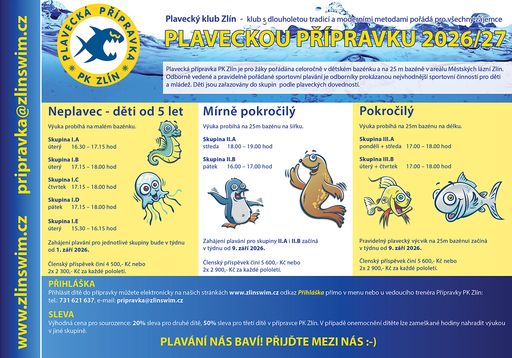
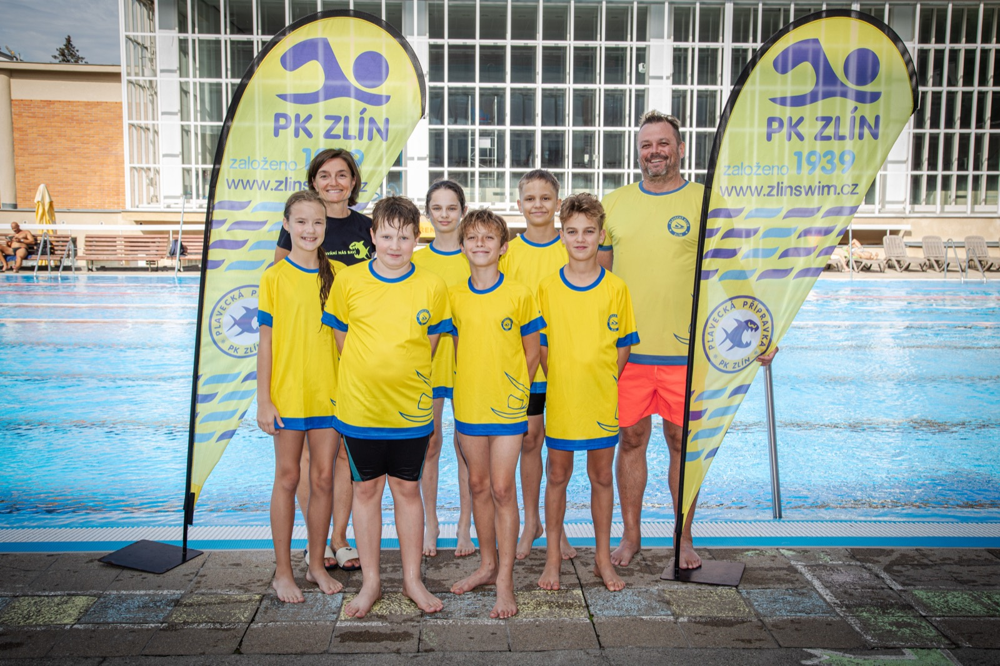

Přihlášky na školní rok 2026/27
Elektronické přihlášky do Plavecké přípravky jsou spuštěné.
Datum8. 6. 2026
AutorDita Knedlová
ProgramPřípravka
Vážení rodiče,
elektronické přihlášky na školní rok 2026/27 jsou spuštěny. Do přípravky se mohou přihlásit děti narozené v roce 2021 a starší. Dotazy vám ráda zodpovím telefonicky na čísle 731 621 637.
Platby prosím provádějte až od července.
Dita Knedlová

Další aktuality
26. 10.19. 10. 13. 10.
13. 10.
2026
Prázdniny, neplaveme!
O podzimních prázdninách 28. až 30. 10. přípravka ani klubové plavání neplavou.

2026
Zlínská plavecká smršť v Prostějově
Dálkaři zabojovali na podzimním krajském přeboru v Prostějově.
2026
Šmelina Cup 2027
Novinky k dalšímu ročníku memoriálu Hanky Martinkové.